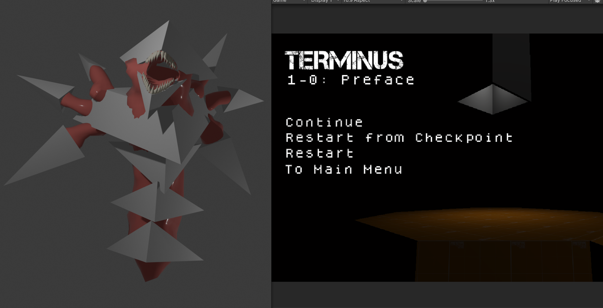

Project Overview:
TERMINUS is my first ever look at making a relatively polished game in Unity, a completely new engine to me at that time.
It's a small game that I've made as an assignment for high school, after having gotten permission from the teacher to use Unity, as I already knew which college i wanted to go to.
The game started off as a group of 4 people. I had taken the lead for the project, with the other 3 working on presentation and gave ideas that were implemented.
The game is heavy inspired from ULTRAKILL, but more based on an immensely rewritten version of Terminus, a god in Roman religion. Speed and score were the ultimate goal, gameplay-wise.
The project lasted about 4 months, which gave everyone plenty of time to work on their game. I used this time wisely to learn about a numerous amount of variables and functions that are frequently used within Unity.
Aside from learning the ropes with Unity, I decided to indulge myself into a bit of everything when it comes to game development. I took a look at modeling in a more optimized manner, as well as UI design. The game does clearly show that I was still learning, as some of the game's UI can get cut off with certain aspect ratios; I didn't know about proper scaling, so I always assumed a 16:9 ratio.
Even though I had larger ideas for the project that I couldn't yet make reality because of my lack of knowledge at that time, I do believe this was a good start to learning how to make games inside Unity.
Mostly for the sake of working across multiple devices, I had set up a Github repository, which can viewed publicly.